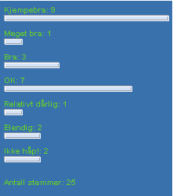

Sist oppdatert 19.02.02
Brukerundersøkelse består av et skjema med alternativer
og en applet som viser resultatet av undersøkelsen
i form av søyle og tall. Klikk her for å teste
den.
Skjemaet genereres av et php-script som leser
de forskjellige alternativene i undersøkelsen fra en
tekstfil. Du kan derfor lett bruke denne undersøkelsen
ved å endre innholdet i tekstfilen, og adressen til
serveren du legger den ut på.
Her er de fire filene som trengs:
Høyreklikk på linkene og velg
"Lagre mål som..." for å laste ned filene.

Eksepel på hvordan det kan se ut.
Appleten er konfigurerbar, slik at du kan selv
bestemme farger, font, størrelse på søyler,
osv. Klikk linken for å se hvordan du endrer
utsende på appleten. Hvis du vil, kan du også
laste ned kildekoden til
appleten.
Det er viktig at tekstfila med svaralternativene
er på formen:
Helt enig=0
Litt enig=1
Nøytral=23
Delvis uenig=7
Helt uenig=9
Du kan bruke så mange svaralternativer
du ønsker. Hvert alternativ må stå på
egen linje, og må ha et tall etter "=" som
representerer antall stemmer. (Disse kan selvfølgelig
initialiseres etter eget ønske. ('o',))
Det er også viktig at alle brukere har tilgang til å
skrive til denne tekstfilen. Klikk linken for å se hvordan
du setter skrivetillatelse
i windows 2000.
Hvis du vil bruke denne spørreundersøkelsen
på din egen webside, må du endre
disse adressene til adressen til serveren du bruker. OSB!
Serveren må ha php-støtte.
|